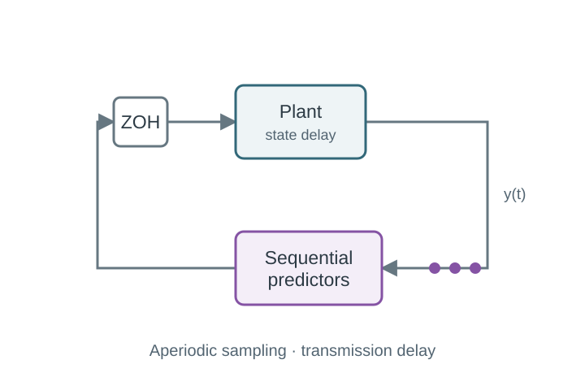

Sampled-Data Output Regulation for a Class of Linear Time-Delay Systems
International Journal of Systems Science, 56(15):3828-3847,
An aperiodic sampled-data control scheme with sequential predictors and observers, with maximum bounds on the state delay, transmission delay, and sampling interval.